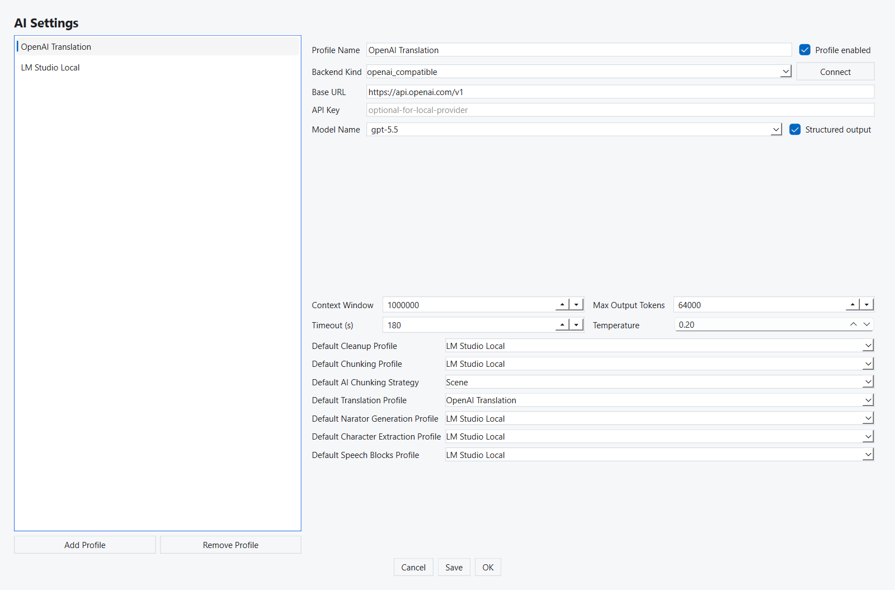
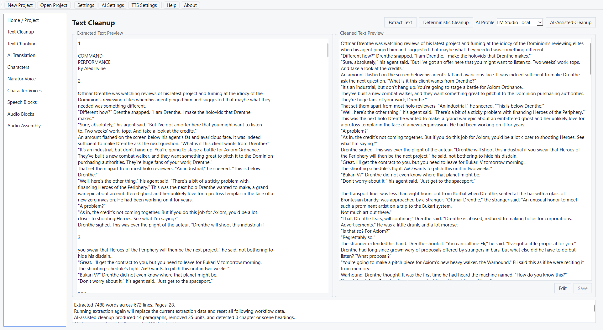
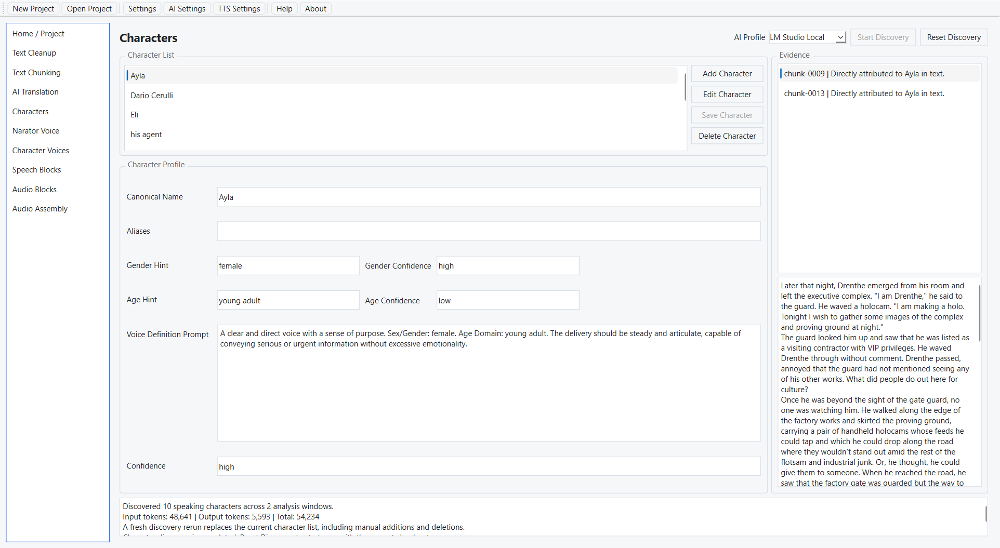
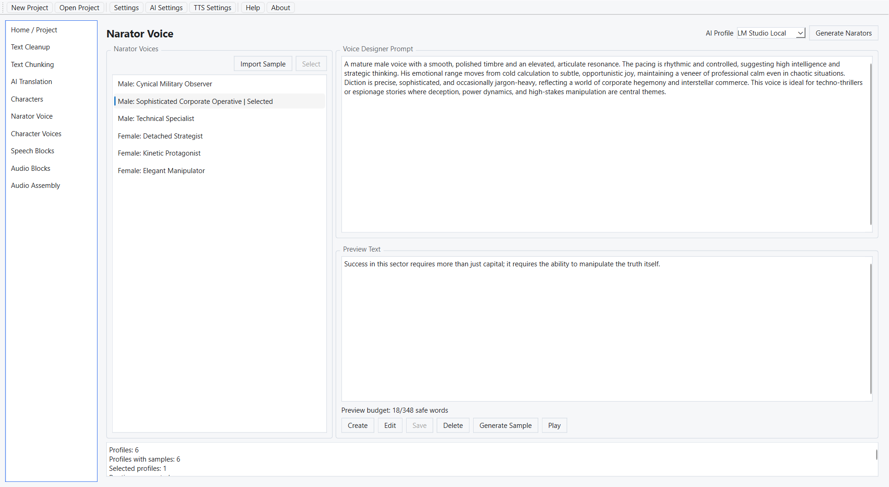
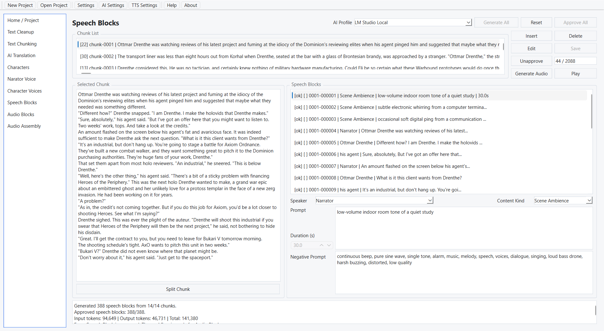

Bun venit
Versiune ajutor: 2.2.0
Versiune aplicatie: 2.2.0
Creator: Ing. Dipl. Dan Dumitru Pasare
Contact: pasaredan1979@gmail.com
AudioMancer transforma o carte sau o poveste scrisa in fisiere WAV de audiobook. Te conduce prin lucru pagina cu pagina: importi sursa, cureti textul, il imparti in segmente, optional il traduci, pregatesti vocile naratorului si ale personajelor, imparti textul in instructiuni de vorbire, generezi audio si asamblezi audiobookul final.
Fereastra
Bara de sus contine Proiect Nou, Deschide Proiect, Setari, Setari AI, Setari TTS, Ajutor si Despre. Acestea sunt disponibile oricand. Ajutor deschide acest ghid offline in browser, iar Despre arata versiunea si textul licentei.
Bara laterala din stanga listeaza cele zece pagini in ordinea de lucru: Acasa / Proiect, Curatare Text, Segmentare Text, Traducere AI, Personaje, Voce Narator, Voci Personaje, Blocuri Vorbire, Blocuri Audio si Asamblare Audio. Pana cand un proiect este deschis, se poate selecta doar Acasa / Proiect; celelalte randuri sunt inactive. Parcurge lista de sus in jos.
Chiar sub bara laterala se afla butonul Stare Operatie. El deschide starea operatiei paginii pe care o privesti: numaratori, avertismente si cum s-a incheiat ultima rulare. Ramane inactiv pana cand acea operatie a rulat cel putin o data si nu este niciodata disponibil pe Acasa, care nu are o operatie proprie. Fereastra pe care o deschide este redimensionabila, nu blocheaza aplicatia si te urmeaza cand treci de la o pagina la alta. O inchizi cu butonul Inchide.
Cum este protejata munca
AudioMancer pastreaza munca terminata acolo unde poate. O modificare locala — un segment, o traducere, un personaj, o voce, un bloc de vorbire — reseteaza doar inregistrarile care depind de ea. Reluarea unei operatii intregi este altceva: sterge rezultatul acelei operatii si tot ce vine dupa el, iar fiecare actiune de acest fel te intreaba mai intai. Intrebarile de confirmare au Nu ca raspuns implicit, asa ca o apasare gresita pe Enter nu distruge niciodata munca.

Meniuri text si cautare
Apasa click dreapta intr-un camp text sau intr-o previzualizare, pe orice pagina sau in dialoguri, inclusiv Curatare si Op Status. Textul doar pentru citire ofera Copiaza, Selecteaza tot, Cauta, Cauta urmatorul si Cauta precedentul. Campurile editabile ofera si Decupeaza, Lipeste, Sterge, Anuleaza si Refa. Comenzile devin disponibile in functie de selectie, clipboard si istoricul editarii.
Foloseste Ctrl+F pentru cautare in campul activ, F3 pentru urmatoarea aparitie si Shift+F3 pentru cea precedenta. Cautarea porneste cu textul selectat sau cu ultima expresie cautata in acel camp. Este literala, nu diferentiaza literele mari de cele mici si continua circular la capetele textului. Anularea cautarii sau lipsa unui rezultat pastreaza selectia si textul.
Ctrl+C/X/V, Ctrl+A si scurtaturile obisnuite pentru Anuleaza/Refa raman disponibile unde se aplica. Lipirea introduce text simplu. Comenzile de editare respecta modul curent Editare/Salvare/Anulare; previzualizarile doar pentru citire raman protejate. Campurile de parola si cheie mascata isi pastreaza interactiunea nativa protejata.
Cautarea modifica numai selectia. Editarea urmeaza fluxul existent de salvare al paginii; comenzile meniului nu salveaza si nu reseteaza automat proiectul.
Ce este necesar
- AudioMancer: aplicatia desktop si acest pachet de ajutor offline.
- VoiceWeaver: necesar pentru toata generarea audio. Instaleaza-l pe acelasi calculator sau pe altul accesibil in reteaua locala.
- Un model AI de text: necesar pentru curatarea asistata de AI, segmentarea asistata de AI, traducere, descoperirea personajelor, generarea profilurilor de narator si Blocurile de Vorbire. Curatarea si segmentarea deterministe functioneaza fara el.
- Spatiu pe disc: pentru fisierul sursa, fisierele WAV intermediare si audiobookul final.
VoiceWeaver trebuie sa ruleze inainte ca vreo mostra sau vreun bloc audio sa poata fi generat. Daca
ruleaza pe alt calculator, introdu adresa acelui calculator in Setari TTS — de exemplu
http://192.168.1.25:8059.
Limbile tinta pentru traducere sunt engleza, romana, germana, franceza, rusa, portugheza, spaniola si italiana. Limba vorbita urmeaza limba traducerii salvata pe pagina Acasa, deci VoiceWeaver are nevoie de voci care o sustin.
Instalare si pornire
Windows
- Descarca arhiva zip AudioMancer pentru Windows.
- Click dreapta pe arhiva si alege Extract All.
- Deschide folderul extras.
- Dublu click pe
AudioMancer.exesauStart-AudioMancer.cmd.
Ubuntu
- Descarca arhiva zip AudioMancer pentru Ubuntu.
- Extrage tot folderul din arhiva.
- Deschide un terminal in folderul extras.
- Ruleaza
./AudioMancersau./start-audiomancer.sh.
Folderul poate sta direct sub radacina unui disc sau a sistemului de fisiere, de exemplu
D:\AudioMancer sau /audiomancer. AudioMancer porneste normal acolo, iar
actiunea Ajutor din bara de sus deschide ghidul in engleza sau romana pastrat
langa executabil. Daca acel fisier lipseste, AudioMancer o spune in loc sa deschida browserul.
Setari
Deschide Setari din bara de sus. Fereastra are patru controale pe un rand, un grup pentru tema si fonturi si o previzualizare vie.
- Limba — English sau Romanian. Schimba interfata si ghidul pe care il deschide actiunea Ajutor.
- Reda semnalul sonor la finalizare — dezactivat implicit. Cand este activ, AudioMancer emite un semnal imediat ce o operatie lunga se incheie singura, deci poti porni o rulare si pleca de la calculator. O operatie pe care o anulezi tu ramane tacuta.
- Pasi derulare — de la 1 la 5, implicit 1. Stabileste cate linii se deplaseaza panourile de text si listele la o rotita de mouse.
- Tema — unsprezece teme incluse: Clasic Luminos, Lectura Calda, Contrast Ridicat, Intunecat Implicit, Contrast Intunecat, AudioMancer Intunecat (tema implicita), Pergament AudioMancer, Studio de Miezul Noptii, Noapte de Jar, Ardezie Nordica si Cerneala si Hartie.
- Marime font UI si Marime font text — doua liste independente, fiecare cu Foarte mica, Mica, Medie, Normala, Mare, Foarte mare si Uriasa, ambele pornind de la Normala. Prima scaleaza butoanele, etichetele si listele; a doua scaleaza ferestrele de text lung si fereastra Stare Operatie, deci poti mari textul de citit fara sa maresti fiecare control.
Grupul Previzualizare de sub liste arata o eticheta, un buton si o fereastra de text exemplu in tema selectata si in ambele marimi de font, ca sa judeci o alegere inainte de a o aplica.
Anuleaza inchide fara a salva. Aplica salveaza si reimprospateaza interfata cu fereastra inca deschisa. OK salveaza, reimprospateaza si inchide.
Teme personalizate pastrate
Daca settings.json contine deja teme personalizate valide, ele apar in lista dupa cele
incluse, sub numele date de autorul lor, iar acele nume nu sunt retraduse cand schimbi limba
interfetei. Selectarea uneia actualizeaza previzualizarea, iar Aplica sau OK pastreaza atat
selectia, cat si culorile stocate ale temei.
settings.json UTF-8 valid se incarca normal, cu sau fara marcaj de ordine a
octetilor. Daca fisierul este deteriorat, AudioMancer ii pastreaza octetii exacti alaturi, ca
settings.corrupt.json — sau o copie numerotata, cand acel nume este ocupat — si
continua cu valorile implicite. Tine acele copii private: contin aceleasi chei API ca originalul.

Setari AI
Setari AI pastreaza profilurile de model de chat folosite pentru curatarea, segmentarea si traducerea asistate de AI, pentru Analiza Cărții, pentru descoperirea personajelor, pentru generarea profilurilor de narator si pentru Blocurile de Vorbire. Aceste profiluri nu genereaza niciodata audio — de asta se ocupa VoiceWeaver, configurat in Setari TTS.
Folosește un abonament ChatGPT
Setările AI se deschid la 800 × 600 pixeli logici, în limita ecranului. Selectoarele implicite compacte, cu lățimi egale, sunt sub lista de profiluri și au etichete pe un singur rând. Editorul apare alături când există spațiu; ferestrele înguste așază secțiunile una sub alta. Lista păstrează poziția derulării și profilul selectat vizibil. Anulează, Aplică și OK rămân vizibile la derulare. Starea inactivă a abonamentului este disponibilă în indicii afișate la trecerea cursorului; progresul și erorile apar când este necesar.
- Adaugă un profil și alege
chatgpt_subscription. Adresa serviciului este fixă și nu este necesară o cheie API. - Apasă Autentificare ChatGPT și finalizează pagina OpenAI din browser. Dacă portul de întoarcere este ocupat, alege Cod de dispozitiv, deschide pagina OpenAI afișată și introdu codul temporar.
- Alege un model candidat sau scrie identificatorul, apoi apasă Testează modelul. Testul trimite solicitări sintetice foarte mici și verifică separat accesul la text și schema strictă necesară Curățării. Numele candidate sunt sugestii, nu o listă a drepturilor contului.
- Lista modelelor principale se actualizează după autentificare și la deschiderea setărilor AI dacă datele memorate sunt mai vechi de o oră. Actualizează modele reîncarcă lista fără a trimite un prompt. Indiciul butonului Actualizează modele arată dacă datele sunt actualizate, memorate, expirate sau incluse în aplicație. Modelul ales și modificările nesalvate sunt păstrate.
- Alegeți Efort de raționament pentru fiecare profil: Implicit furnizor lasă serverul să decidă; nivelurile explicite sunt cele acceptate de model. Efortul mai mare poate afecta timpul de răspuns și consumul abonamentului. Un nivel salvat devenit indisponibil rămâne vizibil și trebuie schimbat înaintea rulării; AudioMancer nu îl înlocuiește automat. Setarea veche Gândire activată devine Mediu, iar Gândire dezactivată devine Fără, care poate fi indisponibil.
- Selectarea unui model de abonament completează Fereastra Context cu valoarea implicită raportată, nu cu maximul posibil. O poți modifica ulterior; actualizarea listei și redeschiderea setărilor păstrează modificarea până la alegerea altui model. Valorile necunoscute păstrează contextul existent. Alegerea modelelor locale sau a endpointurilor personalizate păstrează contextul manual. Alege profilurile implicite, apoi apasă Aplică sau OK. Temperatura este controlată de furnizor; catalogul nu înlocuiește testarea modelului sau a schemei. Schimbarea efortului începe o nouă analiză a cărții, păstrând raportul complet anterior.
Conexiunea experimentală folosește limitele abonamentului ChatGPT, separat de facturarea API. Accesul și limitele se pot schimba. Audio și TTS nu sunt incluse. Un model verificat doar pentru text poate folosi celelalte operații JSON; Curățarea AI necesită verificarea reușită a schemei stricte.
Datele de autentificare sunt protejate pentru utilizatorul sistemului, în afara setărilor portabile: Windows folosește DPAPI, iar Linux necesită un serviciu nativ Secret Service sau KWallet disponibil. Bifează Doar sesiunea curentă înainte de autentificare pentru păstrare doar în memorie. Dacă stocarea indisponibilă împiedică eliminarea unei conexiuni salvate anterior, starea indică acest lucru; deconecteaz-o când stocarea redevine disponibilă. Copierea aplicației portabile nu copiază autentificarea.
Deconectare elimină contul activ și invalidează modelele verificate, păstrând profilurile. Autentificarea și deconectarea se aplică imediat; anularea ferestrei abandonează doar modificările profilurilor. Anularea operației contului, schimbarea profilului sau închiderea ferestrei opresc operațiile în curs. Autorizarea expirată sau revocată necesită reautentificare; erorile de cotă cer reluarea după resetarea limitei abonamentului.
Modele ChatGPT și niveluri de raționament recomandate
Aceste recomandări inițiale echilibrează calitatea cărții audio și consumul abonamentului. Compară rezultatele pe un capitol reprezentativ înainte de a procesa întreaga carte; recomandările nu reprezintă măsurători comparative ale calității. Disponibilitatea și nivelurile de raționament acceptate depind de cont și de catalogul curent de modele.
| Etapa AudioMancer | Model recomandat | Efort de raționament | Recomandare |
|---|---|---|---|
| Curățare Text — asistență AI opțională | GPT-5.6 Luna | Scăzut (Low) | Clasificarea delimitărilor ambigue ale textului. Încearcă Terra dacă deciziile sunt nesigure. Testează modelul trebuie să confirme suportul pentru schema strictă. |
| Segmentare Text AI | GPT-5.6 Terra | Scăzut (Low) | Identifică scene și delimitări coerente. Folosește Mediu pentru tranziții complicate între scene. |
| Analiza Cărții | GPT-5.6 Sol | Mediu (Medium) | Rezumarea și consolidarea necesită înțelegerea relațiilor din întreaga carte. |
| Traducere AI | GPT-5.6 Sol | Mediu (Medium) | Prioritizează sensul, tonul literar și consecvența dialogului. Terra Mediu este alternativa economică. |
| Personaje — descoperire și profiluri | GPT-5.6 Terra | Mediu (Medium) | Echilibrează calitatea extragerii și consumul. Folosește Sol Mediu pentru multe personaje, nume alternative sau identități ambigue. |
| Voce Narator — descrierea scrisă a vocii | GPT-5.6 Terra | Scăzut (Low) | O sarcină creativă mică, ce necesită de obicei puțin raționament extins. |
| Voci Personaje — mostre vocale | Fără model ChatGPT | — | Generarea audio folosește furnizorul TTS configurat. |
| Blocuri de Vorbire — narator și personaje | GPT-5.6 Terra | Mediu (Medium) | Atribuirea vorbitorilor și separarea narațiunii de dialog necesită interpretare atentă. Folosește Sol Mediu pentru dialog dificil. |
| Blocuri de Vorbire — același narator | Fără model ChatGPT | — | Folosește gruparea deterministă a propozițiilor. |
| Blocuri Audio | Fără model ChatGPT | — | Folosește furnizorul TTS configurat. |
| Asamblare Audio / export | Fără model ChatGPT | — | Procesarea și asamblarea audio nu necesită un LLM. |
Selectează explicit efortul Scăzut (Low) sau Mediu (Medium) pentru setări consecvente. Ia în considerare GPT-6 Astra Mediu pentru material deosebit de dificil. Raționamentul mai intens folosește mai mulți tokeni și durează mai mult; rezervă nivelul Ridicat (High) pentru situațiile în care compararea unui capitol arată o îmbunătățire semnificativă. XHigh, Max și Ultra nu sunt recomandate pentru procesarea obișnuită a cărților audio. Economiile exacte ale abonamentului nu pot fi deduse din prețurile API.
Poziționarea modelelor și recomandări despre raționament: documentația OpenAI despre modele. Aceste recomandări ajută la alegerea profilurilor; AudioMancer nu le aplică automat.
Crearea unui profil
- Deschide Setari AI si apasa Adauga Profil. Noul profil este adaugat in lista din stanga si selectat.
- Da-i un Nume Profil clar, de exemplu
Traducere_gpt-5.5sauBlocuriVorbire_LMStudio_Qwen3. Lasa bifat Profil activ — doar profilurile active apar in listele de profiluri din paginile de lucru. - Alege Tip Backend:
lmstudio,ollamasauopenai_compatible. - Introdu URL Baza. Pentru OpenAI foloseste
https://api.openai.com/v1; pentru LM Studio porneste serverul local si folosestehttp://127.0.0.1:1234/v1sau adresa din retea cand ruleaza pe alt calculator. - Introdu Cheie API pentru furnizorii online. Campul este mascat si poate ramane gol pentru un furnizor local.
- Apasa Conecteaza. La reusita, AudioMancer raporteaza cate modele a gasit si completeaza lista Nume Model cu ele; la esec arata motivul si pastreaza ultimele valori functionale.
- Alege modelul in Nume Model. Campul este editabil, deci poti scrie si un nume pe care furnizorul nu l-a listat.
- Seteaza Fereastra Context, Rezerva iesire (tokeni), Timeout (s) si Temperatura. Rezerva pastreaza capacitate de context pentru raspuns cand AudioMancer planifica textul sursa; nu este trimisa ca limita de iesire la furnizor, deci furnizorul alege lungimea raspunsului. Modul de raționare poate păstra valoarea furnizorului, poate activa raționarea sau o poate dezactiva; AudioMancer nu ghicește după numele modelului.
- Alege profilul implicit pentru fiecare operatie, in partea de jos a ferestrei.
- Anuleaza renunta la sesiune. Aplica salveaza fara sa inchida. OK salveaza si inchide.
Poti trece de la un profil la altul in timp ce editezi; fiecare isi pastreaza valorile nesalvate pana cand salvezi sau anulezi. Sterge Profil sterge profilul selectat fara sa intrebe si refuza sa stearga ultimul ramas; orice implicit de operatie care indica profilul sters revine la (niciunul).
O conectare reusita poate completa singura Fereastra Context atunci cand modelul selectat o raporteaza — LM Studio din instanta incarcata, Ollama din detaliile modelului. De indata ce scrii tu insuti in Nume Model sau in Fereastra Context, conectarile ulterioare iti lasa valoarea neatinsa.
Campuri numerice
| Camp | Interval | Implicit |
|---|---|---|
| Fereastra Context | 1 - 1000000 | 16384 |
| Rezerva iesire (tokeni) | 1 - 1000000 | 8192 |
| Timeout (s) | 1 - 65535 | 300 |
| Temperatura | 0.00 - 2.00, pas 0.05 | 0.20 |
Valori implicite pe operatie
Partea de jos a ferestrei stabileste cu ce profil porneste fiecare operatie: Profil implicit pentru curatare, Profil implicit pentru segmentare, Profil implicit pentru Analiza Cărții, Profil implicit pentru traducere, Profil implicit generare narator, Profil implicit pentru extragerea personajelor si Profil implicit pentru blocuri de vorbire. Fiecare listeaza (niciunul) urmat de toate profilurile active.
Alte doua controale stau printre ele si nu sunt alegeri de profil. Strategie implicita de segmentare AI prestabileste strategia cu care porneste pagina Segmentare Text — Paragraf, Semnificatie sau Scena. Mod context segmentare — Echilibrat, Context scena extins sau Context maxim — decide cat text citeste segmentarea AI deodata; ferestrele mai largi pot da granite mai naturale, dar costa mai mult timp la fiecare cerere.
Profiluri LM Studio locale recomandate
Exemple de modele locale: Qwen3.8-27B, google/gemma-4-12b, meta/muse-glimmer, openai/gpt-oss-20b. Folosește identificatorul exact afișat de serverul LM Studio. Acestea sunt modele de evaluat, nu un clasament măsurat. Valorile de mai jos sunt puncte de pornire pentru fiecare operație, nu limite ale modelelor sau setări de eșantionare ale producătorului; testează un capitol reprezentativ și respectă documentația modelului dacă impune alte setări.
| Operație | Context (tokeni) | Temperatură | Raționament în AudioMancer |
|---|---|---|---|
| Curățare AI | 32768 | 0.1 | Implicit furnizor |
| Segmentare AI | 32768 | 0.1 | Implicit furnizor |
| Analiza Cărții | 32768; încearcă 65536 dacă este necesar | 0.2 | Gândire activată, dacă este acceptată |
| Traducere AI | 32768 | 0.2 | Implicit furnizor |
| Descoperire Personaje | 32768; încearcă 65536 dacă este necesar | 0.1 | Gândire activată, dacă este acceptată |
| Descriere Narator | 16384 | 0.3 | Implicit furnizor |
| Blocuri de Vorbire — narator și personaje | 32768 | 0.1 | Gândire activată, dacă este acceptată |
Context: încarcă modelul în LM Studio cu contextul dorit, apoi setează Fereastra Context din AudioMancer cel mult la capacitatea încărcată și la limita acceptată de model. Începe cu 32768 pentru majoritatea operațiilor; încearcă 65536 numai dacă modelul și memoria disponibilă permit acest lucru și ferestrele mai largi sunt utile. Mărirea valorii doar în AudioMancer nu reîncarcă modelul din server. Un context mai mare poate necesita mai multă memorie și timp.
Raționament: Implicit furnizor lasă controlul la LM Studio. Gândire activată solicită nivelul Mediu când endpointul acceptă cererea. Dacă modelul sau motorul nu acceptă setarea, folosește Implicit furnizor și configurează controlul acceptat în LM Studio. Pentru curățare, segmentare și descrieri de narator simple, încearcă Scăzut în presetul LM Studio dacă este disponibil; pentru gpt-oss-20b, Scăzut este un punct de pornire util, iar Mediu merită comparat pentru analiză și atribuirea vorbitorilor. Posibilitatea dezactivării gândirii diferă între modele. Profilurile locale nu folosesc selectorul de efort specific modelelor de abonament.
Curățarea AI necesită ieșire structurată strictă funcțională; confirmă compatibilitatea înainte de a atribui modelul. Blocurile de Vorbire cu același narator, sinteza audio și asamblarea nu folosesc aceste setări LLM.
Referință pentru configurare: configurarea modelelor în LM Studio; referință pentru raționament: fișa modelului gpt-oss-20b.

Setari TTS / VoiceWeaver
Setari TTS configureaza runtimeul VoiceWeaver folosit pentru mostrele naratorului, mostrele personajelor si Blocurile Audio si pastreaza valorile implicite pentru generarea sunetelor de Ambienta Scena.
Runtime VoiceWeaver
- Instaleaza si porneste VoiceWeaver pe acest calculator sau pe altul din aceeasi retea.
- Introdu URL Baza. Valoarea implicita este
http://127.0.0.1:8059. - Apasa Testeaza Conexiunea. AudioMancer raporteaza reusita si numarul de modele gasite sau arata motivul esecului. Linia de stare de langa buton afiseaza Neconectat, Conectat sau Conectare esuata si porneste de la Neconectat de fiecare data cand deschizi fereastra.
AudioMancer necesita interfata REST simplificata VoiceWeaver 1.0.0, furnizata ca serviciu local fara autentificare. Fisierele modelelor VoiceWeaver se administreaza in afara AudioMancer; dupa ce le modifici, testeaza din nou conexiunea pentru a reimprospata descoperirea.
Modele Descoperite arata ce ofera runtimeul, un rand pe model, sub forma model | stare | moduri de generare, cu activ adaugat celui in uz. Pana cand o testare reuseste, afiseaza o singura linie care spune ca nu s-au descoperit modele.
Limite Audio Runtime iti spune daca sunt disponibile capabilitatile Qwen3 de clonare si proiectare a vocii necesare. Inainte de o testare reusita, iti cere sa testezi intai conexiunea; dupa aceea fie confirma capabilitatile, fie le numeste pe cele care lipsesc.
Timpi de asteptare si lungimea blocurilor
| Setare | Interval | Implicit |
|---|---|---|
| Timeout Preview Audio (s) | 10 - 3600 | 60 |
| Timeout Generare Audio (s) | 30 - 7200 | 300 |
| Tokeni Maximi pe Bloc | 128 - 8192, pas 128 | 1024 |
| Temperatura Clonare | 0.05 - 2.00 | 0.90 |
| Temperatura Sub-vorbitor | 0.05 - 2.00 | 0.90 |
| Top-K Sub-vorbitor | 1 - 200 | 50 |
| Top-P Sub-vorbitor | 0.05 - 1.00 | 1.00 |
Tokeni Maximi pe Bloc este cel mai mare buget de generare cu care este planificat un bloc de naratiune. Modelul TTS isi raporteaza propriul buget recomandat, iar acela ramane valabil, deci aceasta setare poate doar scurta blocurile, niciodata nu le lungeste. Coboar-o daca auzi vocea clonata deviind spre finalul unui bloc lung — un model incearca orice pana la plafonul lui recomandat, dar calitatea vocii poate scadea cu mult inainte de el.
Temperatura Clonare si cele trei setari Sub-vorbitor sunt trimise cu fiecare cerere de clonare din Blocuri Audio. Valorile implicite sunt cele ale modelului. Coboara temperaturile si Top-P cand vocea clonata se departeaza de mostra de referinta sau isi schimba caracterul de la un bloc la altul; vocea devine mai stabila, cu pretul unei rostiri mai plate. Audio-ul existent se pastreaza cand le schimbi, deci regenereaza un bloc ca sa auzi efectul.
Lungimea textului de previzualizare nu este o setare. Editoarele din Voce Narator si Voci Personaje accepta text de previzualizare intr-un singur interval fix de cuvinte rostite, cel care produce o mostra utila pentru clonarea vocii; ambele editoare anunta intervalul daca iesi din el.
AudioMancer intreaba modelul TTS descoperit ce recomanda, planifica blocurile dupa cea mai mica dintre acea valoare si Tokeni Maximi pe Bloc, si pastreaza o marja de siguranta sub rezultat. Cerand mai mult audio decat poate produce modelul obtii iesire trunchiata sau tacuta, asa ca modelul are intotdeauna ultimul cuvant.
Ambienta Scena
| Setare | Optiuni sau interval | Implicit |
|---|---|---|
| Pozitionare Ambienta Scena | Fara · Deschideri si inchideri · Deschideri, inchideri si schimbari de scena | Fara |
| Durata Max Secventa Ambienta (s) | 1 - 120 | 10 |
| Nr. Max Blocuri Ambienta | 1 - 24 | 6 |
| Ghidaj Ambienta Scena | 0.1 - 30.0, pas 0.5 | 7.0 |
| Pasi Ambienta Scena | 1 - 300 | 100 |
| Seed Ambienta Scena | -1 - 2147483647 | -1 (Aleatoriu) |
| Sunete Evitate Ambienta | Text liber, separat prin virgula | speech, voices, dialogue, singing, music, melody, low quality, distorted |
Pozitionare Ambienta Scena este comutatorul care decide daca generarea Blocurilor de Vorbire creeaza deloc blocuri de ambienta. Lasa-l pe Fara pentru un audiobook doar cu vorbire. Durata Max Secventa este lungimea intregii secvente de ambienta si guverneaza sunetul pe care AudioMancer il genereaza pentru un bloc de ambienta; durata pe bloc din pagina Blocuri Vorbire se foloseste doar cand aceasta setare nu se aplica. Nr. Max Blocuri este un plafon, nu o cota — modelul poate folosi mai putine cand mai putine surse distincte de sunet sunt utile. Fixeaza un Seed cand vrei un sunet repetabil sau lasa-l pe Aleatoriu.
Sunete Evitate Ambienta listeaza sunetele excluse din fiecare bloc de ambienta, indiferent de scena. AI-ul adauga altceva pe bloc doar acolo unde ar contrazice sunetul acelui bloc, deci tine lista scurta — modelul de sunet cantareste toti termenii evitati impreuna, iar cativa trag mai tare decat o duzina. Nu pune ritmul aici: excluderea bipurilor, tonurilor, alarmelor sau dronelor suprima si un ceas care ticaie, un robinet care picura sau un motor la ralanti. Golirea campului restaureaza lista livrata. Pentru a o suprascrie doar pentru un bloc, foloseste caseta Prompt Negativ din pagina Blocuri Vorbire. Modificarea acestei liste face AudioMancer sa regenereze ambienta deja produsa.
Anuleaza, Aplica si OK se comporta ca in Setari. Limba audiobookului si modul de naratiune nu sunt aici — ele apartin proiectului si se salveaza automat pe pagina Acasa.

Proiecte
Un proiect este un folder care contine cartea sursa, toate fisierele generate si audio final. Proiect Nou si Deschide Proiect sunt actiuni din bara de sus, disponibile oricand.
- Apasa Proiect Nou. Alege folderul parinte, apoi scrie numele proiectului — titlul cartii merge bine.
- Urmeaza automat selectia cartii. Alege un document TXT, PDF, RTF, DOCX, ODT, MD, EPUB, HTML/HTM/XHTML sau FB2. Proiectul complet se deschide cu propria copie a cartii. Anularea oricarui dialog pastreaza proiectul anterior deschis.
- Alege Limba traducerii — engleza, romana, germana, franceza, rusa, portugheza, spaniola sau italiana.
- Alege Stil iesire audio: Acelasi narator pentru toata cartea sau Narator + voci de personaje.
Cartea sursa ramane fixata dupa import; pentru alta carte creeaza alt proiect. Limba traducerii si stilul audio raman editabile pe Acasa si se salveaza automat. Alegerile initiale sunt engleza si narator plus voci de personaje. Alegerea altei limbi sau a altui stil nu porneste traducerea ori generarea audio.
Schimbarea stilului audio cere confirmare in ambele directii. Dialogul enumera doar rezultatele existente afectate, iar numele fisierelor sunt disponibile in detalii. Se sterg mostrele vocilor personajelor, Blocurile de Vorbire (inclusiv editarile manuale si aprobarile), Blocurile Audio si audio generat, precum si audiobookul asamblat din acest proiect. Se pastreaza sursa, textul procesat, traducerea, Analiza Cartii, personajele, prompturile vocale si textele de previzualizare editate ale personajelor, precum si profilurile, selectia si mostra naratorului. Blocurile de Vorbire trebuie refacute pentru noul stil.
Schimbarea limbii se salveaza imediat cand nu exista rezultate afectate. In caz contrar, confirma resetarea Traducerii si aprobarilor ei, personajelor, profilurilor si mostrelor naratorului, vocilor personajelor, Blocurilor de Vorbire, Blocurilor Audio, audiobookului asamblat si Analizei Cartii. Se pastreaza sursa, Extragerea, Curatarea si segmentele de text. Exporturile salvate in afara proiectului se pastreaza la ambele schimbari. Anuleaza revine la optiunea anterioara si pastreaza datele. Optiunile sunt indisponibile cat timp ruleaza o operatie. Proiectele existente isi pastreaza optiunile si rezultatele la deschidere.
Deschide Proiect revine la un folder de proiect existent. Daca datele proiectului sunt deteriorate, AudioMancer explica ce a gasit si iti ofera repararea in loc sa il deschida in tacere. Daca sistemul de fisiere blocheaza crearea, importul sau o reparare, AudioMancer arata eroarea si motivul ei original; nu schimba proiectul si nu raporteaza reusita.
Extragerea TXT si RTF recunoaste UTF-8, precum si texte uzuale central-europene, vest-europene si ruse cp1251. Capitolele EPUB urmeaza marcajul de ordine a octetilor sau setul de caractere declarat XML/HTML, inclusiv UTF-16 si codificari vechi declarate.
Fisierele HTML/HTM/XHTML sunt citite local, in ordinea documentului. Se pastreaza paragrafele, titlurile, citatele si separarile explicite de linie; elementele ascunse, navigarea, scripturile si blocurile de stil sunt omise. Resursele externe nu sunt incarcate, iar aspectul CSS complet si continutul generat de JavaScript nu sunt randate. Verifica notele extragerii pentru aceste limite.
Suportul FB2 citeste XML FictionBook 2 necomprimat. Se pastreaza textul cartii, titlurile, poezia, tabelele si notele auxiliare. Notele raman dupa corpul principal, in ordinea documentului, si sunt semnalate pentru verificare, fara repetare la fiecare referinta. Metadatele publicatiei si imaginile incorporate sunt excluse. Codificarile XML sunt respectate; XML invalid, DTD-urile si entitatile definite in document sunt refuzate. Dezarhiveaza fisierele FB2 inainte de a alege fisierul .fb2.
Cum se citeste pagina Acasa
Rezumat Proiect arata numele proiectului, folderul, fisierul sursa, limba si stilul audio salvate si ce urmeaza de facut. Flux de Lucru deseneaza cele zece etape ca o banda de buline: pline cu o bifa cand sunt finalizate, pline cu un punct cat timp sunt in curs si goale cand nu au inceput. Progres Flux de Lucru repeta aceeasi informatie ca lista, un rand pe etapa, cu Nepornit, In Curs sau Finalizat si un indiciu care explica ce asteapta acea etapa.
Exemplu flux manual
Acesta este un traseu de productie preponderent manual. Foloseste-l cand vrei ca AudioMancer sa administreze fisierele proiectului, vocile, audio si exporturile, dar vrei sa decizi tu segmentele si Blocurile de Vorbire.
- Creeaza proiectul din bara de sus si alege cartea in dialogul urmator. Pe Acasa / Proiect, alege limba traducerii si stilul audio; ambele se salveaza automat.
- Deschide Curatare Text, apasa Extrage Textul, apoi apasa Curatare cu profilul AI pe (niciunul) pentru o trecere determinista. Apasa Editeaza pentru a corecta textul curatat manual, apoi Salveaza.
- Deschide Segmentare Text. Pentru o structura complet manuala apasa Insereaza pentru primul segment, apasa Editeaza, lipeste sau scrie textul si apasa Salveaza. Selecteaza un segment si apasa din nou Insereaza pentru urmatorul.
- Foloseste Editeaza, Salveaza si Sterge pana cand lista de segmente respecta ordinea dorita. Ultimul segment ramas nu poate fi sters.
- Ruleaza Traducere AI daca audiobookul trebuie sa fie in alta limba sau daca vrei o rescriere AI in aceeasi limba. Altfel sari peste pagina.
- Deschide Personaje. Ruleaza Porneste Descoperirea sau construieste lista manual cu Adauga Personaj. Corecteaza numele, aliasurile, indicatiile si prompturile de definitie vocala cu Editeaza Personajul si Salveaza Personajul.
- Deschide Voce Narator. Apasa Creeaza pentru un profil propriu sau Genereaza Naratori pentru sugestii AI, scrie promptul si textul de previzualizare, apasa Genereaza Mostra sau Importa Mostra, asculta cu Reda, apoi apasa Selecteaza.
- Deschide Voci Personaje cand proiectul foloseste voci de personaje. Da fiecarui personaj un prompt si o mostra. Este in regula sa continui doar cu personajele care au deja mostre utilizabile.
- Deschide Blocuri Vorbire. Selecteaza un segment, apasa Insereaza, alege vorbitorul si tipul de continut, scrie textul si apasa Salveaza. Insereaza in continuare pana cand segmentul contine naratiunea, dialogul, pauzele, ambienta si indicatiile dorite.
- Foloseste Aproba, Genereaza Audio si Reda pentru a revizui bloc cu bloc fara sa pierzi locul.
- Deschide Blocuri Audio pentru a genera blocurile aprobate ramase, asculta cu Reda sau Reda Audiobook, regenereaza blocurile slabe si aproba audio.
- Deschide Asamblare Audio, alege modul de iesire, apasa Genereaza Audio si verifica rezultatul cu bara de redare.
- Revino la Acasa / Proiect pentru a exporta documentele text, arhivele ZIP de voce, ZIPul de Asamblare Audio sau un snapshot complet al proiectului.
Curatare text
Curatarea Textului extrage textul lizibil din fisierul sursa si il pregateste pentru lucrul la audiobook. Pagina are doua previzualizari alaturate: Previzualizare Text Extras in stanga, mereu doar pentru citire, si Previzualizare Text Curatat in dreapta.
Extragerea reporneste mereu din sursa, fara checkpoint de reluare. Citeste notele inainte de Curatare: paginile PDF doar cu imagini pot necesita OCR, iar paginile goale pot fi intentionate. Obiectele text incorporate si notele DOCX sunt semnalate cand sunt detectate, dar nu sunt extrase. Continutul auxiliar EPUB este pastrat in ordinea spine si semnalat pentru verificare. Separarile explicite de linie sunt pastrate in continutul XHTML. Extragerea nu executa OCR.
Curatarea pastreaza separarile de capitol, randurile de poezie si regulile pentru cratime intre pagini. Dupa o corectura manuala, paragrafele neschimbate, cu text identic si unic, isi pastreaza rolurile si referintele la sursa; cele modificate sau duplicate primesc o structura conservatoare. Salvarea unei editari reseteaza etapele ulterioare numai dupa salvarea reusita a textului nou.
Validarea reusita confirma transformarile permise si integritatea fisierelor. Verifica sensul textului, separarile dintre paragrafe si eliminarea artefactelor de pagina inainte de a continua.
Cum se ruleaza
Daca o pagina contine numai numere de pagina, antete sau subsoluri recunoscute, Curatarea pastreaza acel text pentru a nu goli pagina. Astfel pot fi curatate si copertile ilustrate care contin doar un numar de pagina. Artefactele de pe paginile cu alt text sunt eliminate ca de obicei.
- Apasa Extrage Textul. Daca exista deja o extragere finalizata, AudioMancer intreaba intai, pentru ca o extragere reusita inlocuieste extragerea curenta si reseteaza toate rezultatele ulterioare. Daca esueaza sau este anulata, rezultatele existente sunt pastrate.
- Alege un Profil AI (optional). Lasa-l pe (niciunul) pentru o trecere pur determinista, cu reguli locale — cea mai sigura prima incercare. Alege un profil activ pentru clasificarea separarilor de linie si a cratimelor ambigue. Curatarea nu rescrie propozitii si nu corecteaza cuvintele recunoscute gresit prin OCR; foloseste Editare pentru aceste corecturi.
- Apasa Curatare. Exista un singur buton de Curatare pentru ambele cazuri; profilul decide daca este implicat un model. Daca exista deja o curatare finalizata, AudioMancer intreaba inainte de a o inlocui impreuna cu tot ce vine dupa ea. Rezultatul existent si munca ulterioara raman disponibile pana cand noua curatare reuseste. Anularea sau o eroare de salvare le pastreaza; apasa din nou Curatare pentru a relua inlocuirea intrerupta.
- Citeste rezultatul. Apasa Editeaza pentru a-l corecta manual, apoi Salveaza — sau Anuleaza pentru a renunta la ciorna si a reveni la textul salvat.
Cat timp o editare este deschisa, Extrage Textul, Curatare, Reseteaza Curatarea si lista de profiluri se dezactiveaza, ca nicio actiune de flux sa nu iti inlocuiasca ciorna pe nevazute. Raman disponibile doar Salveaza si Anuleaza.
Reseteaza Curatarea intreaba mereu intai. Sterge documentul de curatare, fisierul de text curatat, jurnalele de curatare si toate rezultatele din aval, inclusiv personaje, voci si audio.
Apasa Stare Operatie pentru notele rularii. Dupa o validare reusita, starea raporteaza si cate granite cu incredere scazuta a gasit trecerea — o valoare care merita citita inainte de a continua.
Curatarea este reglata pentru engleza, romana, germana, franceza, rusa, portugheza, spaniola si italiana. O alta limba sursa produce in continuare o iesire revizuibila, cu un avertisment care numeste codul limbii detectate, ca sa stii ca trebuie sa verifici atent rezultatul.
Trage separatorul dintre cele doua previzualizari pentru a favoriza o parte. Panourile pornesc impartite egal si niciunul nu poate fi pliat complet. Curatarea poate fi intrerupta si continuata ulterior; progresul AI reluat continua de la ultima cerere finalizata, iar daca un lot trebuie impartit in mai multe apeluri, totalul afisat creste in loc sa ascunda munca terminata.

Segmentare text
Segmentarea Textului imparte cartea curatata in segmentele cu care lucreaza toate paginile urmatoare. Coloana din stanga aseaza Referinta Text Curatat deasupra Listei Segmentelor; panoul din dreapta este Segment Selectat. Trage separatorul dintre cele doua coloane — fiecare pastreaza cel putin o treime din latimea paginii. Impartirea dintre referinta si lista de segmente este fixa.
Generarea segmentelor
- Segmentare Determinista este rapida, gratuita si repetabila. Nu are nevoie de profil AI.
- Segmentare Asistata de AI poate gasi granite mai naturale in proza complexa, dar costa timp de model. Are nevoie de un profil activ selectat in Profil AI si ramane inactiva pana cand exista unul.
- Strategie AI alege cum imparte modelul: Paragraf pentru ferestre stabile de paragrafe, Semnificatie pentru unitati semantice sau Scena pentru granite de tip scena.
- Inaintea unei rulari AI noi, AudioMancer deschide Instructiuni Segmentare AI ca sa adaugi reguli suplimentare in prompt. Lasa gol pentru promptul standard; apasarea Anuleaza acolo anuleaza rularea. Reluarea unei rulari intrerupte sare peste aceasta fereastra si refoloseste strategia stocata cu rularea, ignorand lista.
- Daca modelul nu returneaza o impartire utilizabila pentru o fereastra, AudioMancer pastreaza granitele structurale ale ferestrei acolo unde poate si altfel salveaza fereastra ca un singur segment. Nota de progres numeste intervalul de paragrafe, iar rularea incheiata raporteaza totalul. Un Mod context segmentare mai larg in Setari AI poate da granite mai bune.
Fiecare segment generat foloseste textul exact din sursa curatata. Titlurile si artefactele de pagina pastrate raman separate; proza, versurile, listele, notele si textul preformatat isi pastreaza limitele de rol. Separatorii de scena marcheaza segmentul urmator fara a deveni text rostit. Increderea unui grup reflecta paragraful cel mai incert. Un paragraf prea mare pentru bugetul de text AI este pastrat intreg, cu avertisment, fara cerere catre model; paragrafele urmatoare sunt procesate normal.
Rerularea cere confirmare. Segmentele publicate si rezultatele ulterioare raman disponibile cat timp se pregateste inlocuirea. Anularea sau esecul le pastreaza si salveaza separat progresul inlocuirii; rezultatele dependente se reseteaza doar dupa publicarea reusita. Descoperirea personajelor si definitiile vocilor naratorului si personajelor isi pastreaza regulile existente de conservare. Schimbarea metodei in timpul unei rulari intrerupte cere confirmarea repornirii acelei rulari.
Editarea listei
Fiecare rand al listei arata idul segmentului si prima linie a textului sau. Selecteaza un segment pentru a-l incarca in Segment Selectat.
- Insereaza adauga un segment gol dupa cel selectat si creeaza chiar primul segment cand lista este goala. Intreaba intai, pentru ca un segment inserat adauga o inregistrare netradusa si reseteaza Asamblarea Audio.
- Sterge elimina segmentul selectat impreuna cu traducerea, Blocurile de Vorbire, Blocurile Audio si audio generat, apoi reseteaza Asamblarea Audio. Intreaba intai si este indisponibil cand a mai ramas un singur segment.
- Editeaza intreaba mereu intai: editarea unui segment poate reseta traducerea acelui segment, ii poate elimina Blocurile de Vorbire si Blocurile Audio si reseteaza Asamblarea Audio. Segmentele neafectate sunt pastrate.
- Salveaza publica impreuna modificarea si impactul selectiv asupra etapelor urmatoare, fara alta intrebare. Un esec pastreaza fisierele anterioare. ID-urile segmentelor existente raman stabile; textul modificat sau inserat primeste metadate manuale noi, iar segmentele nemodificate isi pastreaza referintele sursa. Finalizeaza sau reia o rulare intrerupta inainte de editare.
Click dreapta in oricare panou de text pentru Cauta si Cauta Urmatorul. Cautarea se reia o data de la inceput si anunta cand nu exista potrivire. Fiecare panou isi tine minte propriul termen, deci poti cauta lucruri diferite in referinta si in segmentul selectat.
Segmentarea poate fi intrerupta si continuata din punctul ei de control. Reluarea verifica paragrafele sursa si prefixul salvat. Daca se schimba modelul AI, prompturile sau setarile de context, prefixul verificat este pastrat, iar un avertisment explica faptul ca doar textul ramas foloseste noile setari. Progresul numara paragrafele sursa procesate, inclusiv la reluare.

Analiza cărții
Analiza Cărții este un ajutor opțional pentru cititor, disponibil după finalizarea Segmentării Textului. Alege un Profil AI activ și apasă Analizează. Raportul folosește limba țintă selectată pentru traducerea proiectului și arată întâi un rezumat scurt: tipul cărții, genurile, subiectele, cadrul/perioada, personajele principale și temele. Deschide Analiză Detaliată pentru rezumatul extins, personajele secundare, perspectiva și structura narativă, tonul, ritmul, dicția, registrul emoțional, indicațiile pentru cartea audio, incertitudinile și dovezile din sursă.
- Profilul trebuie să declare o fereastră de context de cel puțin 16K. AudioMancer folosește pentru sursă cel mult jumătate din contextul local LM Studio/Ollama sau 30% din contextul online și păstrează rezerve pentru prompt, ieșire, raționare și siguranță.
- AudioMancer acceptă modelele compatibile după capabilități, nu după nume. Contextul și raționarea rămân în Setări AI, nu pe această pagină.
- Cărțile lungi sunt rezumate în ferestre de segmente întregi, apoi consolidate. Un segment canonic nu este tăiat; dacă nu încape, creează segmente mai mici sau selectează un profil cu un context mai larg.
- O rulare întreruptă, anulată sau eșuată se continuă apăsând din nou Analizează, dacă segmentele, limba țintă, profilul și setările sigure ale cererii sunt aceleași.
- Dacă modelul returnează un rezumat sau raport cu structură incorectă, AudioMancer îl regenerează o singură dată din dovezile originale. Această cerere suplimentară consumă din resursele modelului. Dacă formatul rămâne invalid, operația se oprește cu o eroare a răspunsului modelului și păstrează punctele de reluare acceptate. Testează modelul în Setări AI sau alege alt profil, apoi apasă din nou Analizează.
- Selectarea altui profil pornește un candidat nou și păstrează orice raport finalizat. Raportul rămâne vizibil ca învechit și când se schimbă segmentele sau limba țintă, iar Analizează devine disponibil pentru înlocuire.
- După o finalizare curentă, Analizează este dezactivat. Apasă Resetează pentru a elimina numai datele Analizei Cărții și a porni din nou.
Traducere AI
Traducerea AI este optionala si urmareste o traducere literara: pastrarea tonului, a dialogului, a vocii personajelor, a ritmului si a sensului, nu o rescriere cuvant cu cuvant. Limba Originala si Limba Tinta sunt afisate ca indicatoare doar pentru citire — limba tinta se modifica pe Acasa, cu confirmarea rezultatelor care vor fi resetate. Cand cele doua coincid, pornirea unei traduceri foloseste totusi profilul AI, deci rularea rescrie, normalizeaza sau adapteaza textul in loc sa il copieze.
Pagina
Lista Segmentelor se intinde in partea de sus, cu cele trei butoane alaturi. Fiecare rand este marcat [In asteptare], [Tradus] sau [Aprobat], urmat de idul segmentului si prima linie a sursei. Dedesubt, Segment Original si Segment Tradus stau alaturi; originalul poarta si un contor Segmente aprobate: n/m si o bara care urmareste aprobarile, nu progresul traducerii.
Trage separatorul orizontal de sub lista de segmente pentru a vedea mai multe segmente deodata. Lista nu coboara niciodata sub inaltimea ei de pornire si nu ocupa niciodata mai mult de jumatate din pagina, deci ambele panouri de text raman utilizabile. Cele doua panouri de text pastreaza fiecare cel putin 30% din latimea lor comuna.
Traducerea
- Porneste Traducerea are nevoie de un profil AI selectat si de cel putin un segment fara traducere. AudioMancer deschide intai Instructiuni Traducere AI ca sa adaugi reguli suplimentare; Anuleaza acolo anuleaza rularea. Reluarea unei rulari intrerupte sare peste fereastra si pastreaza regulile stocate cu ea.
- Retradu Segmentul Selectat devine disponibil dupa ce traducerea a pornit si are nevoie de un segment selectat si de un profil selectat. Cere mereu instructiuni, iar acestea se aplica doar acelei incercari. Daca incercarea esueaza sau este anulata, textul si aprobarile existente raman neatinse.
- Reseteaza Traducerea este modul in care incepi o trecere noua. Odata ce fiecare segment este tradus, Porneste Traducerea se dezactiveaza, deci schimbarea profilului sau a regulilor pentru o trecere completa noua inseamna resetare intai. Intreaba inainte de a sterge traducerea si rezultatele din aval pentru personaje, voci, vorbire, audio si audiobook.
- Aproba Selectia aproba segmentul curent si muta selectia la urmatorul, deci poti revizui o carte intreaga fara sa atingi lista. Aproba Tot aproba toate segmentele traduse deodata, fara sa intrebe.
Traducerea poate fi intrerupta si continuata ulterior din acelasi proiect.

Personaje
Pagina Personaje gaseste rolurile vorbitoare si da fiecaruia un prompt de definitie vocala pentru paginile de voce. Coloana din stanga aseaza Lista Personajelor deasupra Profilului Personajului; Dovezi ocupa dreapta.
Descoperirea
Alege un Profil AI activ si apasa Porneste Descoperirea. Prima data AudioMancer explica ce face operatia; apoi deschide Instructiuni Descoperire Personaje ca sa adaugi reguli in prompt, iar Anuleaza acolo anuleaza rularea. Reluarea unei rulari intrerupte sare peste fereastra de instructiuni — apasa din nou Porneste Descoperirea pentru a continua, pentru ca nu exista un buton separat de reluare.
Reseteaza Descoperirea elimina rezultatul descoperirii si jurnalele ei de tranzactii, impreuna cu munca din aval, lasand neatinse jurnalele din amonte, precum traducerea. Foloseste-l cand datele descoperirii sunt inutilizabile.
Cat timp descoperirea ruleaza sau asteapta reluarea, Stare Operatie arata ferestrele finalizate si cele planificate si duce acea baza mai departe in progresul sintezei profilurilor. Cand niste candidati sunt exclusi pentru dovezi insuficiente, pagina incheiata grupeaza motivele fara sa stocheze fragmente din sursa, iar exportul Personaje raporteaza acelasi numar.
Profilul personajului
Selectarea unui personaj completeaza formularul: Nume Canonic, Aliasuri (separate prin virgula), Indicatie Gen cu Incredere Gen, Indicatie Varsta cu Incredere Varsta, Prompt Definitie Vocala si o Incredere generala. Fiecare camp este doar pentru citire pana cand intri intr-o editare; formularul se deruleaza cand fereastra este scunda.
- Adauga Personaj cere numele canonic, apoi deschide formularul pentru rest. Salvarea cere confirmare si sincronizeaza lista de tinte din Voci Personaje, pastrand Blocurile de Vorbire, Blocurile Audio si iesirile de asamblare existente.
- Editeaza Personajul deblocheaza formularul. Salvarea cere confirmare, pentru ca Blocurile de Vorbire atribuite devin neaprobate, Blocurile lor Audio sunt resetate si Asamblarea Audio este resetata.
- Sterge Personajul cere confirmare: Blocurile de Vorbire atribuite revin la Narator si devin neaprobate, doar Blocurile Audio afectate sunt resetate, iar Asamblarea Audio este resetata.
- Salveaza Personajul confirma adaugarea sau editarea curenta. Daca incerci sa parasesti un personaj cu modificari nesalvate, AudioMancer ofera Salveaza, Renunta sau Anuleaza.
Dovezi
Lista de dovezi arata cate un rand pentru fiecare pasaj justificativ, sub forma id segment | motiv, iar panoul de dedesubt arata segmentul sursa complet. Trage separatorul dintre ele; niciunul nu coboara sub o cincime din inaltimea grupului. Click dreapta in panou pentru Cauta si Cauta Urmatorul.

Voce narator
Voce Narator pregateste vocea principala de povestire. Lista Voci Narator este in stanga; Prompt Designer Voce si Text Previzualizare se aseaza in dreapta. Lista arata cate un rand pe profil, cu | Selectat marcandu-l pe cel folosit de proiect.
Construirea unui profil
- Creeaza cere un nume afisat, apoi deschide un profil gol pentru editare.
- Genereaza Naratori cere profilului AI selectat sugestii editabile. Confirma intai — analiza poate dura mult si poate consuma tokeni platiti — apoi intreaba cate profiluri sa genereze (de la 1 la 20), apoi deschide Instructiuni Profil Narator pentru reguli suplimentare optionale. Acestea sunt doar sugestii de text; nu se produce audio.
- Editeaza deblocheaza promptul si textul de previzualizare. Avertizeaza ca a continua sterge mostra curenta si, cand editezi naratorul selectat si exista deja audio, ca audio generat al naratorului si Asamblarea Audio vor fi resetate.
- Salveaza confirma modificarea. Sterge elimina un profil personalizat dupa confirmare.
Mostre
- Genereaza Mostra confirma intai — AudioMancer contacteaza runtimeul TTS, iar conexiunea trebuie testata in prealabil in Setari TTS — apoi produce fisierul WAV. Daca exista o mostra, ea este inlocuita.
- Importa Mostra deschide un selector de fisiere WAV, valideaza fisierul, apoi cere textul exact rostit in el. Acel text este obligatoriu: el este ceea ce modelul de voce potriveste.
- Reda reda mostra si devine Opreste in timpul redarii, deci o poti opri chiar si cand pagina este altfel ocupata.
- Selecteaza face din profilul inspectat naratorul proiectului, folosit de Blocurile de Vorbire si de Blocurile Audio. Confirma intai, pentru ca schimbarea reseteaza audio naratorului si Asamblarea Audio.
Buget previzualizare, sub textul de previzualizare, arata cate unitati rostite costa textul tau fata de limita sigura a modelului TTS activ si se actualizeaza in timp ce scrii. Generarea este refuzata cat timp esti peste acea limita.
Textul de previzualizare este rostit pentru a inregistra mostra pe care o imita fiecare voce generata, asa ca lungimea lui hotaraste cat de buna poate fi acea voce. Trebuie sa aiba intre 25 si 44 de cuvinte — aproximativ 10 pana la 18 secunde de vorbire, cu 30 pana la 38 de cuvinte ca tinta ideala. Sub acest prag mostra pastreaza tonul vocii, dar nu si ritmul ei; mult peste el, calitatea nu se mai imbunatateste. Salveaza refuza un text de previzualizare in afara intervalului si iti spune intervalul si numarul tau curent de cuvinte. La fel se intampla si cu o caseta goala: un profil nou se deschide cu textul standard pentru limba proiectului deja completat, asa ca golirea lui nu lasa nimic din care sa se inregistreze o mostra.
Cand apesi Genereaza Naratori, i se cere modelului AI un text de previzualizare in acelasi interval. Daca returneaza totusi un text inutilizabil, doar textul acelui narator este inlocuit cu cel standard pentru limba respectiva — ceilalti naratori sunt pastrati, iar mesajul de la final iti spune cati au fost inlocuiti.
Cand limba vocii proiectului se schimba, AudioMancer actualizeaza limba fiecarui profil dar pastreaza textul de previzualizare scris de tine sau de model; doar un text implicit neatins este inlocuit cu cel implicit al noii limbi. Trage separatorul dintre lista si editor — lista nu mai scade sub 220 de pixeli si nu creste peste aproximativ jumatate din pagina, iar editorul pastreaza cel putin o treime. Maximizarea ferestrei da panourilor de prompt si de previzualizare inaltimi egale.

Voci personaje
Voci Personaje pregateste cate o mostra pentru fiecare tinta vocala. Tintele Vocii listeaza intai tinta naratorului, apoi fiecare personaj descoperit, fiecare rand aratand nume | Mostra prezenta sau nume | Mostra lipsa. Prompt Designer Voce si Text Previzualizare se aseaza in dreapta.
In proiectele Narator + voci de personaje, fiecare tinta de tip personaj poate avea propriul prompt si propria mostra. In proiectele Acelasi narator pentru toata cartea, pagina este doar pentru citire si fiecare replica refoloseste mostra naratorului selectat. Tinta naratorului nu este niciodata editabila aici — o schimbi pe pagina Voce Narator.
Text Previzualizare este rostit pentru a inregistra mostra pe care o imita vocea generata a acestui personaj, asa ca lungimea lui hotaraste cat de buna poate fi acea voce — aceleasi 25 pana la 44 de cuvinte cerute si pe pagina Voce Narator, cu 30 pana la 38 ca tinta ideala. Descoperirea personajelor cere modelului AI sa scrie replici originale in felul de a vorbi al personajului, in loc sa citeze cartea, pentru ca multe personaje pur si simplu nu au destul dialog de citat. Cand modelul AI nu poate produce replici utilizabile, personajul primeste textul standard pentru limba proiectului, pe care il poti inlocui oricand.
Controale
- Editeaza deblocheaza promptul si textul de previzualizare pentru personajul selectat. Avertizeaza ca a continua sterge mostra curenta a acelui personaj si, cand exista audio generat, ca audio care foloseste aceasta voce si Asamblarea Audio vor fi resetate. Blocurile de Vorbire si randurile de Blocuri Audio sunt pastrate.
- Salveaza confirma modificarea. Promptul trebuie sa fie nevid, iar textul de previzualizare trebuie sa aiba intre 25 si 44 de cuvinte; Salveaza refuza orice se afla in afara acestui interval si iti spune numarul tau curent de cuvinte.
- Importa Mostra deschide un selector WAV, apoi cere textul exact rostit in fisier, apoi confirma impactul asupra audio.
- Genereaza Mostra confirma, apoi contacteaza runtimeul TTS pentru acel singur personaj.
- Previzualizare reda mostra stocata si devine Opreste Previzualizarea in timpul redarii.
- Genereaza Mostre Personaje, in partea de sus a paginii, regenereaza mostrele tuturor tintelor de tip personaj curente, dupa ce iti spune cate vor fi inlocuite. Ignora tinta naratorului.

Blocuri de vorbire
Blocurile de Vorbire transforma fiecare segment in instructiuni de audiobook: naratiune, dialog, pauza, indicatie si, optional, sunete de Ambienta Scena. Lista Segmentelor se intinde in partea de sus, cu butoanele ei alaturi; dedesubt, Segment Selectat si Blocuri Vorbire stau alaturi.
Generarea
- Genereaza Tot proceseaza fiecare segment care inca nu are blocuri. Confirma intai — o cerere AI per segment, consumand tokeni, iar o rulare reusita reseteaza Blocurile Audio si Asamblarea Audio. Cand Ambienta Scena este activata in Setari TTS, confirma si asta, pentru ca ambienta adauga apeluri suplimentare pe segment. La final deschide Instructiuni Blocuri Vorbire pentru reguli suplimentare; reluarea unei rulari intrerupte sare peste acea fereastra.
- Imparte Segment reimparte doar segmentul selectat. Confirma, apoi cere mereu instructiuni — pentru un singur segment nu exista scutire la reluare.
- Reseteaza sterge toate Blocurile de Vorbire, goleste Blocurile Audio si Asamblarea Audio si reseteaza progresul dupa Voci Personaje.
- Aproba Tot aproba deodata toate blocurile ramase, fara sa intrebe.
Seteaza Pozitionare Ambienta Scena in Setari TTS inainte de generare sau de reimpartire: ea decide daca se creeaza deloc blocuri de ambienta.
Cum se citeste lista de blocuri
Fiecare rand incepe cu ok cand blocul este aprobat sau -- cand nu este, apoi un ! daca blocul poarta un avertisment, apoi idul blocului, vorbitorul si textul. Randurile de Ambienta Scena arata in schimb promptul de sunet si durata lui. Randurile de segmente de deasupra arata cate blocuri are deja fiecare segment.
Editarea unui bloc
- Insereaza cere confirmare, adauga un bloc dupa cel selectat si il deschide direct pentru editare.
- Sterge cere confirmare, apoi selecteaza blocul urmator ramas sau pe cel anterior cand l-ai sters pe ultimul.
- Editeaza deblocheaza listele Vorbitor si Tip Continut si textul. Avertizeaza doar cand blocul are deja audio generat.
- Tip Continut ofera Naratiune, Dialog, Ambienta Scena, Pauza si Indicatie. Alegerea Ambienta Scena inlocuieste editorul de text cu campurile Prompt, Prompt Negativ si Durata (s).
- Vorbitor este fixat pe Narator si dezactivat in proiectele cu acelasi narator.
- Aproba devine Dezaproba pe un bloc aprobat. Aprobarea muta selectia pe blocul urmator, ca sa parcurgi rapid un segment.
- Contorul de langa butoane arata lungimea blocului fata de limita modelului TTS sau - cand nu se aplica nicio limita si numara promptul de ambienta la blocurile de ambienta.
- Genereaza Audio si Reda arata exact cum va suna blocul aprobat selectat, fara sa parasesti pagina. Sunt indisponibile pe blocurile de pauza si de indicatie, care nu produc vorbire.
Editarea, stergerea, reimpartirea sau schimbarea vorbitorului unui bloc reseteaza doar audio acelui bloc. Inserarea, aprobarea sau dezaprobarea pastreaza Blocurile Audio generate si reseteaza Asamblarea Audio. Cursorul, zona evidentiata si pozitia de derulare din panoul sursa supravietuiesc tuturor acestor actiuni.
Trage separatorul orizontal de sub lista de segmente pentru a vedea mai multe segmente; el porneste la inaltimea blocului de butoane si nu ocupa niciodata mai mult de 60% din pagina. Separatorul de jos mentine panoul sursa intre 300 si 480 de pixeli latime. Generarea poate fi intrerupta si continuata fara pierderea blocurilor aprobate.

Blocuri audio
Blocurile Audio trimit Blocurile de Vorbire aprobate catre VoiceWeaver si pastreaza fisierele WAV
in audio_blocks/. Text Sursa este in stanga; in dreapta, lista
Blocuri Vorbire sta deasupra Blocului Selectat.
Generarea
- Seteaza intai Audio Ambienta Scena pe Pornit sau Oprit. Decide daca blocurile de ambienta aprobate sunt generate in aceasta rulare, iar pornirea adauga o confirmare, pentru ca are nevoie de un model de runtime care sustine prompturi de sunet.
- Porneste Generarea Audio confirma, verifica daca VoiceWeaver este accesibil — si se opreste cu o eroare clara daca nu este — apoi genereaza fiecare bloc aprobat care nu are inca audio. Audio existent este sarit chiar si cand nu este aprobat, deci asa continui si dupa adaugarea de blocuri. Blocurile de pauza si de indicatie nu apeleaza niciodata modelul de voce. Blocurile rostite lungi sunt impartite la nevoie si reunite intr-o singura iesire.
- Regenereaza Audio reface doar blocul selectat, dupa confirmare; blocurile fara legatura raman neatinse. Este indisponibil pe randurile de pauza si de indicatie.
- Reseteaza Generarea Audio sterge audio generat dupa confirmare.
- Aproba — care afiseaza Dezaproba pe un rand aprobat — si Aproba Tot confirma amandoua inainte de a schimba aprobarea.
Ascultarea
Fiecare rand arata [aprobat|in asteptare] durata | fisier | text. Reda reda blocul selectat si devine Opreste; un bloc de pauza generat se "reda" ca tacerea lui exacta.
Reda Audiobook reda continuu de la randul selectat pana la sfarsitul cartii, selectand fiecare rand pe masura ce ajunge la el, inserand pauzele la lungimea lor reala si sarind randurile carora le lipseste fisierul. Devine Opreste Audiobook in timpul rularii. Este cel mai rapid mod de a auzi daca ritmul functioneaza inainte de a asambla ceva. Orice pornire de redare aici opreste redarea vocii naratorului, a vocilor personajelor si a Asamblarii Audio.
Aproba audio numai dupa ce l-ai ascultat. Regenereaza blocurile afectate dupa schimbari de text, voce, limba, mostra, model, prompt sau durata. Trage separatorul dintre textul sursa si zona de revizuire — fiecare parte pastreaza cel putin un sfert din latime — si separatorul dintre cele doua liste din dreapta, unde fiecare pastreaza 30% din inaltime. Generarea poate fi intrerupta si continuata ulterior.

Asamblare audio
Asamblarea Audio combina Blocurile Audio aprobate in fisierele WAV finale ale audiobookului, in
folderul audiobook/ al proiectului.
Setari iesire
| Setare | Optiuni sau interval | Implicit |
|---|---|---|
| Mod Iesire | Pe segment text · Limita de timp · Audiobook intreg | Audiobook intreg |
| Durata Maxima | 1 - 1440 min, doar in modul Limita de timp | 30 min |
| Pauza Intre Blocuri | 0 - 60000 ms | 250 ms |
| Pauza Intre Segmente | 0 - 60000 ms | 1000 ms |
| Format Iesire | WAV | WAV |
| Include Ambienta Scena | pornit sau oprit | pornit |
Blocurile de Vorbire de tip pauza devin tacere exacta, de lungimea lor; cele doua setari de pauza adauga golurile automate dintre blocuri si dintre segmente. Schimbarea oricareia dintre aceste setari dupa ce exista deja fisiere de audiobook cere confirmare, apoi sterge acele iesiri si raportul de asamblare — Blocurile Audio aprobate si tot ce este in amonte sunt pastrate.
Previzualizari mix scena
Aceasta lista arata fiecare grup de Ambienta Scena sub forma eticheta | durata | sunete | stare, unde starea este necesita audio generat, pregatit sau previzualizare pregatita. Genereaza / Reimprospateaza Mix Scena suprapune fisierele WAV de sunet aprobate ale grupului intr-un singur strat ambiental, iar Reda Mix Scena il reda. Asamblarea finala foloseste acelasi mix cand Include Ambienta Scena este pornit.
Verificarea rezultatului
Fisiere Audiobook Generate listeaza fiecare iesire ca nume fisier | durata | blocuri audio. Selecteaza una si apasa Reda Audio sau dublu click pe un rand pentru a reporni acel fisier de la inceput. Un singur player deserveste ambele liste, deci pornirea uneia o opreste pe cealalta, iar ambele butoane afiseaza Opreste Redarea cat timp se reda ceva.
Bara de redare arata pozitia curenta si durata totala. Cursorul si salturile -10s si +10s devin active doar cat timp audio chiar se reda — selectarea unui fisier fara redare le lasa inactive la 00:00.
Reseteaza Asamblarea Audio sterge fisierele de audiobook generate si progresul asamblarii dupa confirmare. Asamblarea poate fi intrerupta si continuata ulterior, atat timp cat intrarile si setarile inca se potrivesc.

Export
Panoul Exporturi de pe pagina Acasa are cate un rand pe etapa. Fiecare rand ofera un format si un buton Exporta, iar ambele raman inactive pana cand acea etapa a produs date utilizabile. Treci cu mouseul peste un rand ca sa vezi daca este Disponibil, Nepregatit sau raporteaza un Artefact lipsa.
| Export | Formate |
|---|---|
| Text Curatat | TXT sau Markdown |
| Segmente Text | TXT sau Markdown |
| Traducere AI | TXT sau Markdown |
| Personaje | TXT sau Markdown |
| Voce Narator | ZIP |
| Voci Personaje | ZIP |
| Blocuri Vorbire | TXT sau Markdown |
| Asamblare Audio | ZIP |
Blocurile Audio nu au export propriu — audio lor ajunge la tine prin arhiva de Asamblare Audio. Arhivele ZIP de voce contin mostra WAV si un fisier text insotitor cu definitia vocala si textul de previzualizare. Arhiva ZIP de Asamblare Audio contine fisierele WAV de iesire si un manifest cu metoda de compunere, fisierele, duratele si dimensiunile lor.
Exporta ZIP Proiect, langa butoanele de proiect, scrie un snapshot complet al
proiectului. Exporturile trebuie scrise in afara folderului de proiect, ca un snapshot sa nu fie
niciodata arhivat in el insusi si un fisier de runtime sa nu fie suprascris; AudioMancer refuza o
destinatie din interiorul proiectului si spune de ce. Fisierele WAV finale raman si in proiect, sub
audiobook/.
Probleme frecvente
O pagina din bara laterala nu se deschide
Toate paginile in afara de Acasa au nevoie de un proiect deschis. Creeaza sau deschide unul intai.
Un buton este inactiv
Majoritatea paginilor depind de cele de deasupra lor, iar aproape orice actiune este dezactivata si cat timp o operatie ruleaza sau o editare este deschisa. Salveaza sau anuleaza editarea, lasa operatia sa se termine si verifica daca etapa anterioara a produs un rezultat.
Genereaza Tot sau Imparte Segment este inactiv in Blocuri Vorbire
Amandoua au nevoie de un profil AI selectat, in orice proiect — inclusiv in cele cu acelasi narator. Adauga un profil activ in Setari AI.
Genereaza Audio este inactiv in Asamblare Audio
Asamblarea cere ca fiecare Bloc Audio sa fie aprobat. Revino la Blocuri Audio si aproba randurile ramase.
Porneste Traducerea este inactiv
Dispare de indata ce fiecare segment are o traducere. Foloseste Reseteaza Traducerea pentru o trecere noua sau Retradu Segmentul Selectat pentru un singur segment.
Nu se genereaza audio
Porneste VoiceWeaver, verifica URLul de baza in Setari TTS, apasa Testeaza Conexiunea si confirma ca modelele necesare apar in Modele Descoperite.
O traducere se opreste in mijlocul segmentului
Creste Rezerva iesire (tokeni) pe profilul de traducere. O traducere este la fel de lunga ca sursa ei, deci rezerva, nu fereastra de context, margineste planificarea locala a cererii.
Operatiile AI de text esueaza sau returneaza JSON invalid
Coboara temperatura, creste timeoutul, foloseste o fereastra de context mai mare sau alege un model care respecta JSON mai fidel. Modelele locale sunt de obicei mai lente decat cele gazduite.
Aplicatia spune ca datele sunt invechite
Regenereaza paginile din aval dupa ce ai schimbat text, voce, limba, mostra sau model din amonte.
O operatie lunga a fost anulata
Majoritatea operatiilor se reiau. Redeschide aceeasi pagina si apasa din nou butonul de pornire; AudioMancer continua din punctul de control si sare peste fereastra de instructiuni cand reia.
Glosar
- Proiect: un folder care contine cartea sursa, fisierele generate si audio final.
- Profil AI: o configuratie de model de chat folosita doar pentru lucrul cu text.
- VoiceWeaver: runtimeul care genereaza tot audio din AudioMancer.
- Segment: o portiune din carte folosita pentru revizuire si generare.
- Bloc de vorbire: o instructiune — naratiune, dialog, pauza, indicatie sau Ambienta Scena.
- Bloc audio: fisierul WAV generat sau o inregistrare de sincronizare pentru un bloc de vorbire aprobat.
- Tinta vocala: naratorul sau un personaj, ca entitate care poate avea un prompt de voce si o mostra.
- Ambienta Scena: blocuri ordonate de sunet de fundal, fiecare descriind o sursa de sunet simpla.
- Asamblare Audio: etapa finala care combina Blocurile Audio in fisierele WAV ale audiobookului.
- Stare Operatie: butonul de sub bara laterala care deschide starea operatiei paginii curente.